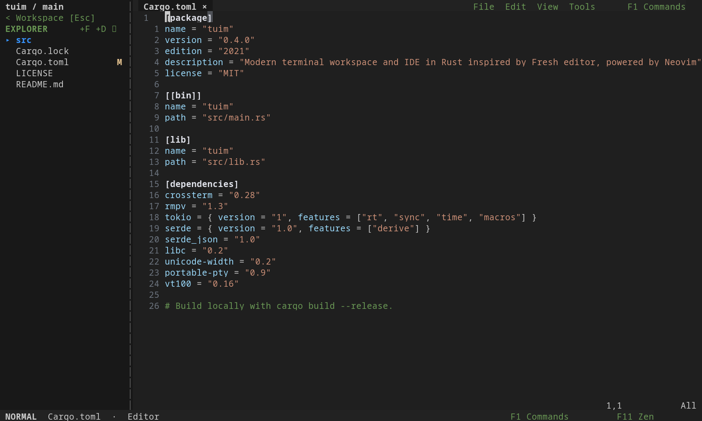
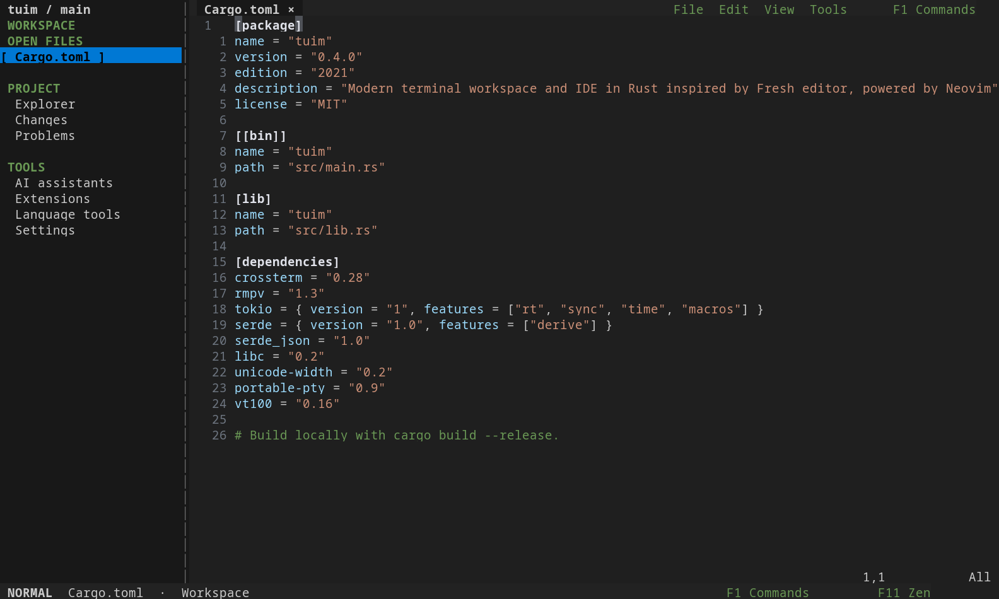
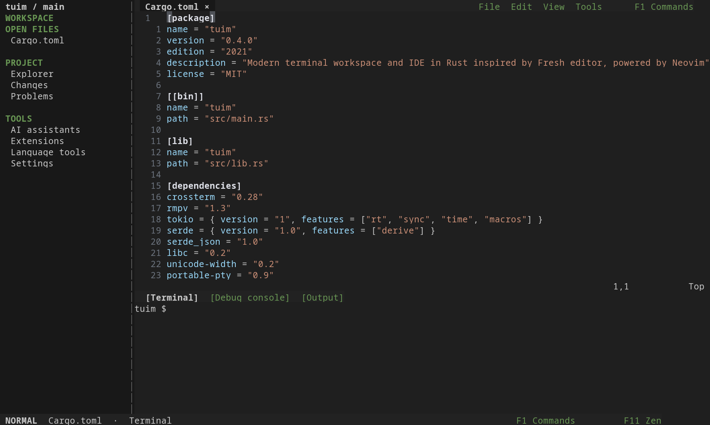
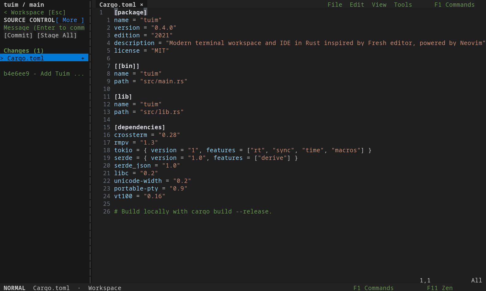
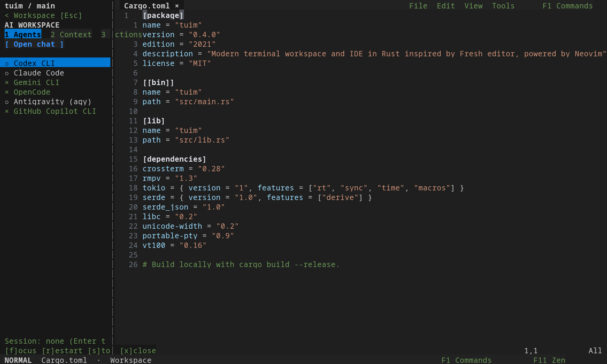
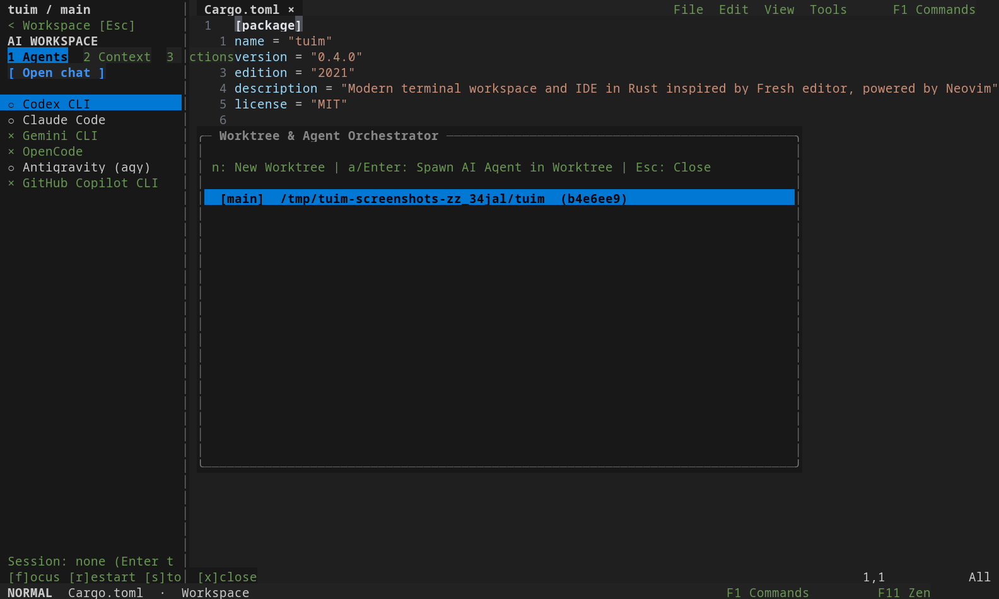
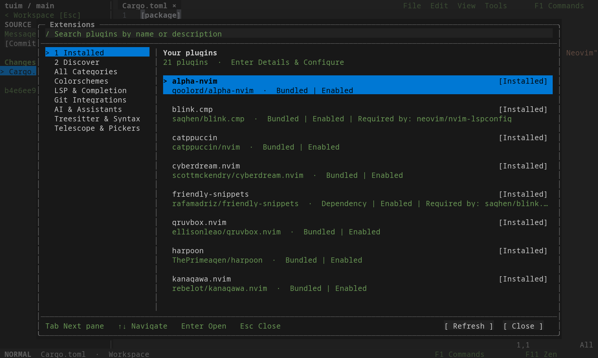
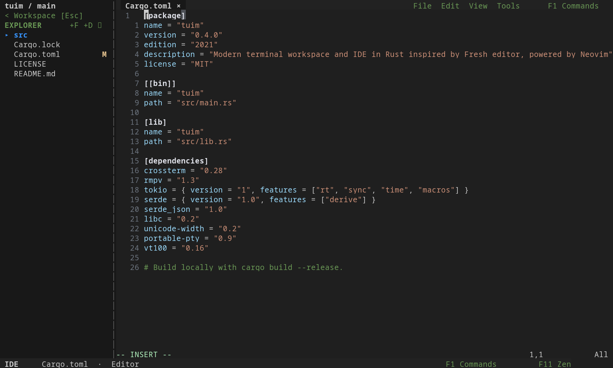
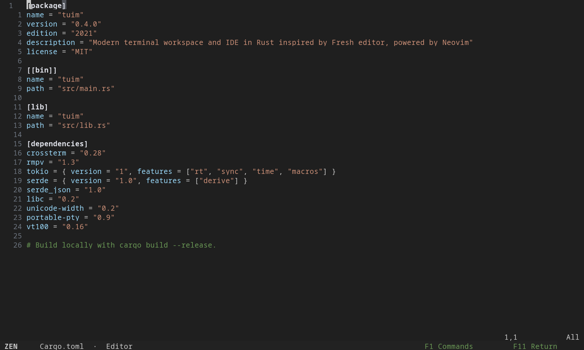
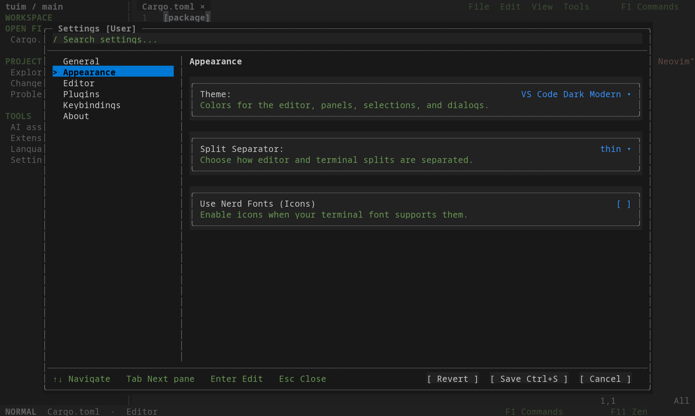

Find your place
Browse the Explorer, switch open files, search commands, and move between regions with F6 / Shift+F6. Resize panels with Alt+Arrows or mouse drag.
The Rust rewrite · A workspace for your terminal
Your code, shells, Git changes, and coding assistants in one place. Tuim pairs a Rust workspace with the Neovim editing engine, giving your terminal room for the whole project.
Open source · Rust + Neovim · MIT license

The workspace
A compact sidebar keeps your files and tools together. Open commands with F1, or use the mouse to find your next action.

Browse the Explorer, switch open files, search commands, and move between regions with F6 / Shift+F6. Resize panels with Alt+Arrows or mouse drag.
Use Vim motions or modeless text editing. Split the editor with Alt+S / Alt+V, select with the mouse, and right-click for common actions.
Browse Installed and Discover in Extensions. Configure, enable, disable, or uninstall plugins in place. Mason manages language servers; the AI panel launches installed coding assistants.


Keep the project together
Native tools around the editor, with your shell and assistants ready when you need them.
Open a persistent shell below or to the right of your code. Select, copy, paste, and scroll without switching into Neovim terminal modes.
Space o t bottom · Space o T right
Browse files with Ctrl+P, toggle native Explorer with Ctrl+E (or Space e), search text with Alt+G, and report issues with F12.
List Git worktrees, create a new branch and worktree, or launch Codex in an existing worktree from the orchestrator.
Requires Git and an installed, authenticated Codex CLI.


Your development tools
Extensions opens directly to your installed library, including bundled plugins and dependencies. Search the marketplace in Discover, or select a plugin to configure, enable, disable, or uninstall it.
Side-by-side details on wide terminals. A focused view on smaller screens. Your installed library works offline, and uninstalling preserves your configuration.
Explore Extensions
Three editing modes
Switch from the mode badge in the footer. Press F11 to enter Zen and return to your previous mode.
Modal editing, Vim motions, and Neovim commands, surrounded by Tuim’s native tools.

Modeless editing with familiar save, undo, search, clipboard, and selection shortcuts.

The editor takes the viewport, with a quiet footer to get you back. Your terminal session is preserved.
Real captures of the Rust build, using portable symbols and VS Code Dark Modern in an isolated demo project. Plugins are disabled for reproducibility. Open an image for the full view.
Make it yours
Change themes, indentation, line numbers, and shortcuts from native settings. Tuim keeps its configuration, plugins, and state in separate XDG directories, leaving your regular Neovim configuration alone.
Read about configuration
Installation
Build the Rust checkout with Cargo and Neovim 0.12 or newer.
Rtuim is the MIT-licensed Rust rewrite of Tuim. Release packages are not yet published; build from source for now.
cargo build --locked --release
./target/release/tuimRun from the Rust source checkout. Inspect the installer
Platform status & limitations
Linux is locally tested. macOS and WSL still need validation of the Rust rewrite; native Windows is not supported. Mouse, clipboard, and modified keys depend on your terminal and transport.
Plugins that expect to control the outer terminal may need adjustments. Coding assistants require their own installed CLI and authentication.